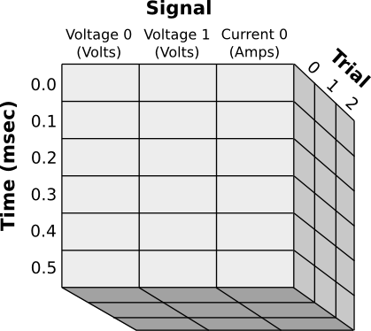

!MetaArray is a class that extends ndarray, adding support for per-axis meta data storage. This class is useful for storing data arrays along with units, axis names, column names, axis values, etc. !MetaArray objects can be indexed and sliced arbitrarily using named axes and columns.
Download here: .. image:: MetaArray_attachments/MetaArray.py
Here is an example of the type of data one might store with !MetaArray:
Notice that each axis is named and can store different types of meta information: * The Signal axis has named columns with different units for each column * The Time axis associates a numerical value with each row * The Trial axis uses normal integer indexes
Data from this array can be accessed many different ways:
data[0, 1, 1]
data[:, "Voltage 1", 0]
data["Trial":1, "Signal":"Voltage 0"]
data["Time":slice(3,7)]
Accepted Syntaxes:
# Constructs MetaArray from a preexisting ndarray and info list
MetaArray(ndarray, info)
# Constructs MetaArray using empty(shape, dtype=type) and info list
MetaArray((shape), dtype=type, info)
# Constructs MetaArray from file written using MetaArray.write()
MetaArray(file='fileName')
info parameter: This parameter specifies the entire set of meta data for this !MetaArray and must follow a specific format. First, info is a list of axis descriptions:
info=[axis1, axis2, axis3...]
For example, the data set shown above would look like:
MetaArray((3, 6, 3), dtype=float, info=[
{"name": "Signal", "cols": [
{"name": "Voltage 0", "units": "V"},
{"name": "Voltage 1", "units": "V"},
{"name": "Current 0", "units": "A"}
]
},
{"name": "Time", "units": "msec", "values":[0.0, 0.1, 0.2, 0.3, 0.4, 0.5] },
{"name": "Trial"},
{"note": "Just some extra info"}
]
Data can be accessed through a variety of methods: * Standard indexing–You may always just index the array exactly as you would any ndarray * Named axes–If you don’t remember the order of axes, you may specify the axis to be indexed or sliced like this:
data["AxisName":index]
data["AxisName":slice(...)]
data["AxisName":"ColumnName"]
data["ColumnName"] ## Works only if the named column exists for this axis
data[["ColumnName1", "ColumnName2"]]
* Boolean selection--works as you might normally expect, for example:
sel = data["ColumnName", 0, 0] > 0.2
data[sel]
data.write('fileName')
newData = MetaArray(file='fileName')
!MetaArray is a subclass of ndarray which overrides the `__getitem__` and `__setitem__` methods. Since these methods must alter the structure of the meta information for each access, they are quite slow compared to the native methods. As a result, many builtin functions will run very slowly when operating on a !MetaArray. It is recommended, therefore, that you recast your arrays before performing these operations like this:
data = MetaArray(...)
data.mean() ## Very slow
data.view(ndarray).mean() ## native speed
A 2D array of altitude values for a topographical map might look like
info=[
{'name': 'lat', 'title': 'Latitude'},
{'name': 'lon', 'title': 'Longitude'},
{'title': 'Altitude', 'units': 'm'}
]
array[10, 5]
array['lon':5, 'lat':10]
array['lat':10][5]
info=[
{'name': 'vals', 'cols': [
{'name': 'altitude', 'units': 'm'},
{'name': 'rainfall', 'units': 'cm/year'}
]},
{'name': 'lat', 'title': 'Latitude'},
{'name': 'lon', 'title': 'Longitude'}
]
array[1, 10, 5]
array['lon':5, 'lat':10, 'val': 'rainfall']
array['rainfall', 'lon':5, 'lat':10]